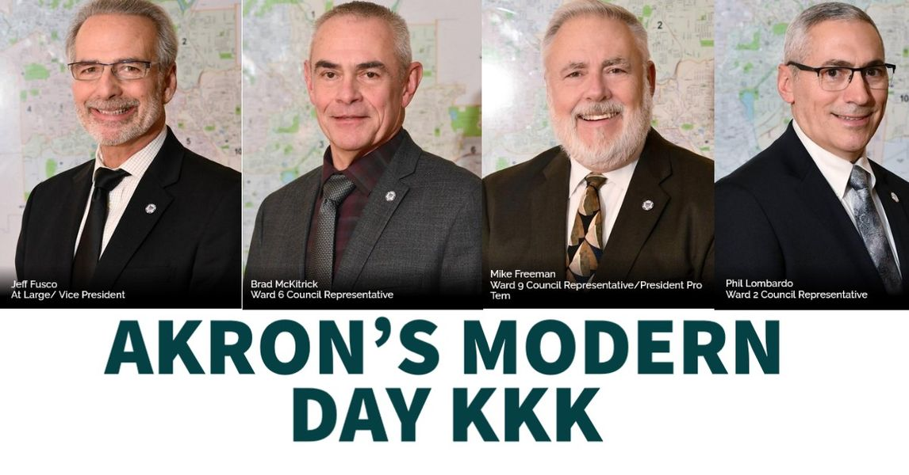

Timeline photos
HEY AKRON:
When are you going to stop electing racists? This is just as much your fault as anyone else.
Well guess what?
Phil Lombardo has no opponent because none of you chickenshits bothered to run. So he's still in.
Brad McKitrick has no opponents. I guess you actually like racists. Because you certainly couldn't be bothered to get 25 signatures to be on the ballot.
By the grace of God, that pseudo-Christian Mike Freeman is retiring. Otherwise I'm sure you would have just elected him again for the millionth time.
Fortunately, a bunch of people are running for At-Large:
Ginger Baylor
Cynthia D. Blake
Vyrone Finney
Jeff Fusco
Eric Garrett
Derrick Hall
Reau McClendon
Linda Omobien
Johnny Osb
Ronald Smith Sr.
Fran Wilson
But $5 says you all are too apathetic, too lazy and too stupid to actually help the campaign of someone else to beat Jeff Fusco. You probably won't even go out and vote on May 2, 2023... the only election that matters in Akron. So he'll probably win again. He always gets the most votes anyway.
YOU GET WHAT YOU GET!
This block of pasty white racists are uniting to keep us in the 1950s where everyone should KNOW THEIR PLACE, when America was Great.
AND IT'S ALL YOUR FAULT.